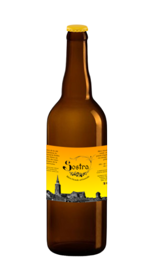

La Blonde
Bière blonde, plutôt ronde, avec une pointe d'agrume, citron ou
orange selon les palais.
Taux d’alcool : 4 %
Température de dégustation : 5-6°C
Couleur : blonde - 9 EBC
Amertume : un peu amer - 40 IBU
Ingrédients :
Température de dégustation : 5-6°C
Couleur : blonde - 9 EBC
Amertume : un peu amer - 40 IBU
Ingrédients :
- Malt d'orge pale
- Houblons: Chinnook & Cascade
- Levure kveik

L'IPA
Une Indian Pale Ale de couleur profonde, très amère, équilibrée avec
des arômes de biscuits, d'herbes et d'agrumes.
Taux d’alcool : 4 %
Température de dégustation : 7-9°C
Couleur : foncée profonde - 55 EBC
Amertume : assez amer - 55 IBU
Ingrédients :
Température de dégustation : 7-9°C
Couleur : foncée profonde - 55 EBC
Amertume : assez amer - 55 IBU
Ingrédients :
- Malt d'orge pale et foncée
- Houblons: Nugget & Aramis
- Levure kveik
L'Ambrée
Bière ambrée, avec des notes de caramel, peu houblonnée et beaucoup
portée sur la céréale.
Taux d’alcool : 4 %
Température de dégustation : 7-9°C
Couleur : ambrée - 27 EBC
Amertume : pas amer - 20 IBU
Ingrédients :
Température de dégustation : 7-9°C
Couleur : ambrée - 27 EBC
Amertume : pas amer - 20 IBU
Ingrédients :
- Malt d'orge pale et caramelisé
- Houblons: Nugget & Fuggles
- Levure kveik